Investigated using inotify for the Monitor program. Initial results look promising, though there is a limit of 8192 watches that can be created. The number of watches is configurable by writing to a file in /proc, but the Monitor program won't know ahead of time whether or not this limit will be reached. For the initial implementation, 8192 will be sufficient for testing purposes (assuming 1 watch per directory). Currently the Monitor recursively watches a given directory, and displays file update notifications to the screen.
Monitor program finalized. Some simple tests were run, such as creating new directories and files, then deleting and re-creating them. The Monitor program is able to catch all file and directory modifications. Also started to work on the reverse dependency generator using the LD_PRELOAD method. This method works by loading a shared library before the invocation of gcc to intercept gcc's own filesystem calls (eg: fopen(), open(), creat()) to determine which files are being read/written to. Currently the shared library displays the files being accessed to the screen, as well as the mode (read or write). An initial test compiling a dummy C file that included one header shows the .c and .h file being read, and the .o file being written. Files in /tmp and files that are non-existent are ignored. The next step is to write out reverse dependency information (and possibly regular dependencies, as well?) to the disk. The first attempt at writing out reverse dependency information will be to use filesystem links (symlinks?) in directories.
Using the preloaded library to write out dependencies proved more difficult than initially anticipated after last weeks results. Last week I was testing by preloading the library and compiling a simple C file:
#include "lib.h"
int main(void)
{
return libfunc();
}
By preloading the library I got the following output:
$ LD_PRELOAD=/home/mjs/tup/ldpreload.so gcc -c main.c tup: Access file 'main.c' mode 0 from func open tup: Access file 'lib.h' mode 0 from func open tup: Access file 'main.o' mode 1 from func fopen64In theory at this point I could save the file accesses in a list, and then write out the reverse dependencies (eg: main.c and lib.h cause main.o to be updated). When I tried this, it seemed that the file accesses were going into separate lists. It turns out this is due to the fact that gcc spawns multiple sub-processes to handle the various tasks (pre-processing, compilation, and assembly). Each sub-process preloads its own version of the library, so the library is in fact initialized multiple times. This is evident after putting a constructor function in the library, and printing out the current PID with each file access:
$ LD_PRELOAD=/home/mjs/tup/ldpreload.so gcc -c main.c Library init. Library init. Library init. tup[9162]: Access file 'main.c' mode 0 from func open tup[9162]: Access file 'lib.h' mode 0 from func open Library init. tup[9163]: Access file 'main.o' mode 1 from func fopen64As you can see, the files are read in one process and written to in another. In order to accumulate all the files in one process to write out the dep files, it would seem ideal to have a server process of some kind, and then all other invocations of the preloaded library could send their file accesses to the server. Then when the server quits, it could write out all of the dependencies. This is a bit difficult to do with just LD_PRELOAD, since gcc's use of execv() causes the library's destructor functions to not be called in all cases. A much simpler approach is to use a wrapper program that can setup the server and the LD_PRELOAD environment, call gcc, and then on shutdown write out the dependencies. The wrapper program output for the same example looks as follows:
$ /home/mjs/tup/wrapper gcc -c main.c Started server '/tmp/tup-19142' tup-preload.so[19145]: Send file 'main.c' mode 0 from func open tup-server[19142]: Received file 'main.c' in mode 0 tup-preload.so[19145]: Send file 'lib.h' mode 0 from func open tup-server[19142]: Received file 'lib.h' in mode 0 tup-preload.so[19146]: Send file 'main.o' mode 1 from func fopen64 tup-server[19142]: Received file 'main.o' in mode 1 Stopping server '/tmp/tup-19142'
Now even though the files are read in one process (19145) and written to in another (19146), they are all sent through the socket to the main wrapper process (19142) and accumulated in a list.
There are still a few more tricks involved in getting the dependency information out. I extended the test case to include a lib.c file which also includes lib.h. This file is compiled and then archived into lib.a, and then both lib.a and main.o are built into the main executable (this is the same example from my proposal). After the first run of using the list of files in the wrapper program to generate symlinks for dependencies, I ended up with the following file structure (and corresponding depgraph that was generated from a perl script):
$ ls *.tupd lib.a.tupd: lib.a main stdKBDfV lib.c.tupd: lib.o lib.h.tupd: lib.o main.o lib.o.tupd: lib.a stdKBDfV main.c.tupd: main.o main.o.tupd: main main.tupd: main |
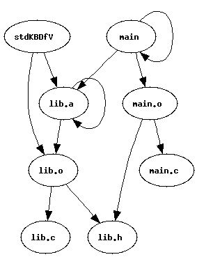 |
There are a few obvious issues - first, some files are both read and written to in certain cases (such as linking) which causes files to be dependent on themselves (eg: 'main'). Further, even though the preloaded library ignores files in /tmp, there are still some temporary files created in the current directory by certain programs (in this case, 'ar'). Getting rid of the links for files dependent on themselves was a trivial strcmp(), but the temporary file issue was more difficult.
What happens is 'ar' will write to the temporary file, and then issue a rename() call to move it to its final location (here, lib.a). Ideally the dependencies would be represented on disk without the intermediate temporary file. In other words, the process [read lib.o, write stdKBDfV, rename stdKBDfV to lib.a] should look the same as [read lib.o, write lib.a]. This is accomplished in the wrapper program handling rename events. The rename() libc call is wrapped by the preloader, similar to open() and fopen(). Instead of sending a single file event to the server, however, two file events are sent. This instructs the wrapper server to rename any existing files in its list to the new name. Then when the files are written out, all traces of the temporary file are gone. After these fixes, the following file structure and graph are obtained:
$ ls *.tupd lib.a.tupd: main lib.c.tupd: lib.o lib.h.tupd: lib.o main.o lib.o.tupd: lib.a main.c.tupd: main.o main.o.tupd: main |
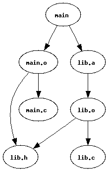 |
Note that although this graph is what we would expect to get if we were using standard gcc/make dependencies, they are in fact written in the opposite order, wherein the output file is listed in the input file's dependency directory. So if 'main.c' is changed, we can easily look in main.c.tupd to see that main.o needs to be updated. Similarly, we can look in main.o.tupd and see that main needs to be re-linked. No mention of any lib.* files are made in these directories, so they could be ignored in this case.
Per suggestion from Professor Lien, I constructed a test-case generator script that can generate random test cases. As input it takes the number of files to create, the number of headers the files should include, and the min/max directory hierarchy size. Currently all generated files are linked into a final executable (ie: there are no libraries here). One thing I tested with this script is the difference between having all files in a single directory, and all files in different directories that are 7 levels deep. Since the dependencies are stored using the paths of both objects, that means the dependency files would be 15 levels deep (1 extra for the filename itself). Using my benchmark program I compared the difference between using standard make with no dependency output and make using my wrapper program to generate dependencies. In each case there are 100.c files, each of which includes 7 other header files. I compared the amount of overhead in terms of execution time, as well as the disk space required. The execution time is measured by the factor increase over make without dependencies (so 1.05 means 5% extra time required).
| Single Directory | 7-Layers Deep | |
| Factor | 1.097951 | 1.293445 |
| Disk blocks (du -sk) | 1208 | 25004 |
As you can see, the number of directories severely impacts the performance of the wrapper. This is because the wrapper program must create large directory hierarchies, many of which are essentially duplicates of each other. This takes a long time to stat() and mkdir() each level of the directory. Also, the large number of empty directories consumes a lot of disk space.
I recently started to use git as a version control system for this project. Although I am still learning it, one of the things I found interesting is how it represents all kinds of objects (files, commits, etc) as SHA1 hashes in its database (which is also the filesystem). Using a similar approach here, instead of storing the dependency of a/b/foo.o on d/e/bar.h as ".tup/d/e/bar.h.tupd/a/b/foo.o" I can take the SHA1 hash of the filenames to generate a unique ID for each file, and make that the directory. So here I would get ".tup/4ebc353d14ff5a5bddd3fa79741ae7cc06719fd4/0bc5dcc8490ad3f03010233ded74871358c9d349". Although this is a bit more unreadable upon casual perusal (eg: using 'ls' or 'find'), it does have some nice properties. First, the depth of the dependency file tree is constant. Second, the objects in memory can easily be referenced by their 40-byte handle (20-byte SHA1 hash expanded as ASCII hex), instead of their filenames of arbitrary length (up to MAXPATHLEN, or 4096). This cuts down on the memory usage, since it is easier to allocate these objects on the stack. Using the same tests as before, I ran the benchmark program to determine the effect of using the SHA1 hash approach.
| Single Directory | 7-Layers Deep | |
| Factor | 1.116010 | 1.141484 |
| Disk blocks (du -sk) | 1216 | 1216 |
Although in the single directory case we can see a slight degradation in performance as compared to the direct filename approach, it is apparent that the SHA1 approach offers more consistent behavior regardless of the file structure of the program. In particular, note that the filespace required is exactly the same in both cases (that is not a copy/paste error!) This is much more desirable than the 20-times increase in disk space required by the direct filename approach when using sub-directories.
Of course since the hash is a one-way algorithm, we need someway to get back from the hash name to the actual filename. In other words, convert the 0bc5d... name above into the filename "a/b/foo.o". This is currently done by creating a file called "name" in the corresponding 0bc5d... directory that contains the text "a/b/foo.o".
I started work on the Updater portion of the build system. This required some modifications to the Monitor to get it to output changed file hashes to a special directory. For example, if you issue a "touch foo.c" command, the monitor will create a file called ".tup/attrib/e55780...". This is because 'touch' only affects file attributes (the timestamps). If the file is actually written to, it will go in the .tup/modify/ directory. I am not sure if the attrib directory will actually be necessary, but for now it is useful because I am used to doing 'touch foo.c; make' in order to test Makefiles, so I can do a similar test here.
For now I have started to write the Updater as a Perl script, since it is easy to test several different approaches before I get into the memory management issues associated with C. The Updater currently only handles files being touched or modified, so it does not yet work if files are created, deleted or renamed. Note that although the Wrapper program handles when programs use rename() internally (such as ar), the Monitor and Updater will also need to be rename/delete aware (for example, if the user issues 'mv foo.c bar.c' or 'rm foo.c'. This has not yet been addressed.
The algorithm used by the Updater is basically a depth-first search, using the nodes in the attrib/ and modify/ directories as the start nodes. The first stage of the algorithm walks the dependency graph stored in the filesystem to determine which nodes need to be updated (and abort if there is a circular dependency). The second stage walks the partial graph (again with DFS) to rebuild the nodes in their topological order.
In order to see this in action, I modified the grapher script to display nodes that would be updated in red, with the rest of the graph in black. The updater script only reads the nodes in red. I also created a new script that can generate a random graph. Its input is the number of nodes and number of edges, and then it randomly picks two nodes and assigns an edge between them. The names of the nodes are picked randomly from words in /usr/share/dict/words. Here is one such generated graph, where the 'bioplasmic' file was touched:
| 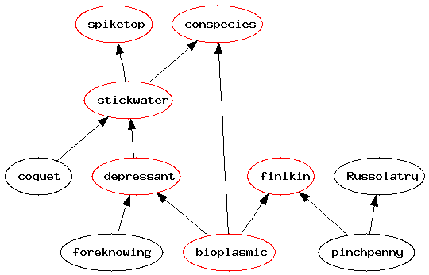 |
The graph as seen by the Updater contains only the red nodes. All subtrees in black are not visited at all. Here is the graph generated from the Updater script:
| 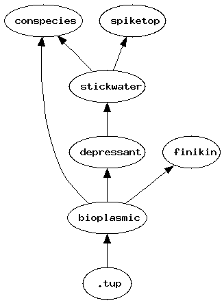 |
The Updater program also outputs the commands that would run in order to update the tree. The files were generated using a simple test program called 'create_dep' which reads in N files, and writes to 1 file. When used with the wrapper, it essentially creates the edges of the graph in the .tup directory. The last argument is the file that is written - this can be seen as the file being "updated":
6713836dd56d9f3986dba8956c1774b11f04977c Visit: 6713836dd56d9f3986dba8956c1774b11f04977c Visit: 4292086f7b6bf5c87ec0d5dc39774b534c9ed9c1 Visit: cbdb3db4b2645d5429755e26348aec5e7be16fad Visit: e2f3af40b23c178d018db610121a6e5723a7eed9 Visit: adf3787e8363817082b2f720e7909a5895772f9d Visit: eb51fc12bda245d93ac07adcb045d0b6bafec313 No cmd for .tup No cmd for 6713836dd56d9f3986dba8956c1774b11f04977c Skipping 4292086f7b6bf5c87ec0d5dc39774b534c9ed9c1 - count >0 Execute ../../create_dep foreknowing bioplasmic depressant Execute ../../create_dep depressant coquet stickwater Execute ../../create_dep bioplasmic stickwater conspecies Execute ../../create_dep stickwater spiketop Execute ../../create_dep bioplasmic pinchpenny finikin
So essentially what happens is it prints the start node (671383... = 'bioplasmic'), and then the nodes that it visits while building the partial DAG. During this construction phase, each node is assigned a count that describes the number of incoming edges. The second phase starts at the virtual ".tup" node, which has edges to each of the start nodes (here, there's only one). For each edge, it decrements the destination node's count by 1. If its count reaches 0, the command to update the destination node is executed, and it is recursively parsed. For example, since 'conspecies' has two incoming edges, the first time it is visited it is skipped (which is what the "Skipping ..." line means). Then the nodes are updated in the following order: 'depressant', 'stickwater', 'conspecies', 'spiketop', and 'finikin'.
The Updater still needs to handle the other file changes (create/delete/move), and handle errors (eg: if updating a node fails, the Updater should be able to pick up where it left off).
I continued to work on the Updater so it could handle other file updates. All of the testing for this week is done using a very simple test program. There are two .c files - main.c and other.c. Both of them include other.h and are compiled and then linked into 'main'. This is essentially the same as my earlier test case, only without the intermediate library.
The first issue I had with creating files was that the Updater doesn't know what the resulting object file will be linked/archived into. The easiest way to handle this seems to be to enlist the help of an external build script. This build script contains the domain-specific knowledge for the build (in this case, how to compile .c files and link .o files). This lets the Updater be unconcerned wtih the types of files or commands used to update them. Instead it just traverses the partial DAG and tells the build script what files need to be updated. The modify case is fairly straight-forward - it the build script receives a request to update a .o file, it will run gcc on the .c file. If it receives a request to update the executable, it will link all of the objects.
Creating files was a bit more challenging initially, though the result seems very simple. Consider an empty build. I have the following files after running 'tup init':
clean.sh build other.c main.c other.h .tup .tup/create .tup/modify .tup/delete .tup/lock
When the Monitor is initialized, it will go through all the files in the directory and put links to them in .tup/create/...
clean.sh other.c build main.c other.h .tup .tup/create .tup/create/8aba54e7... .tup/create/6a8809d4... .tup/create/80754af9... .tup/create/406e031b... .tup/create/76857b23... .tup/modify .tup/delete .tup/lock .tup/object .tup/object/8aba54e7... .tup/object/8aba54e7.../.name == clean.sh .tup/object/6a8809d4... .tup/object/6a8809d4.../.name == other.c .tup/object/80754af9... .tup/object/80754af9.../.name == build .tup/object/406e031b... .tup/object/406e031b.../.name == main.c .tup/object/76857b23... .tup/object/76857b23.../.name == other.h |
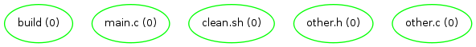 |
My initial thought was that the Updater should go through the create/ directory and tell the build script to update each file there, similar to the modify case. This would result in both .o files being created, so their entries would also go in .tup/create/. If the Updater is run again, it would then try to issue two separate update commands to the build script, one for each .o file. Unfortunately, we only want to run a single linking command using all objects. So it seems using the approach of having create/ objects cause updates is infeasible without putting build-specific knowledge in the Updater.
After hitting that dead-end, I came up with the following. Instead of actually compiling the .c file when a 'create' update is received by the build script, I just add some dependency links. So for main.c, I run 'create_dep main.c main.o' to create the main.c->main.o dependency. By adding the main.o entry to the tup filesystem, its entry is also put in the create/ directory, and the main.c entry is moved from create/ to modify/. The Updater loops and re-processes all the new files in the create/ directory (now the entries for main.o and other.o). When the build script receives a 'create' event for an object file, it runs 'create_dep main.o main' to create the link from the object to the executable. The Updater loops again and sends the 'create' event for main to the build script, which does nothing because this is the final node. Note that at this point, only files in the .tup/ directory have been modified. No files have actually been compiled, and main.o/other.o/main do not exist yet. Here is the current structure:
clean.sh other.c build main.c other.h .tup .tup/create .tup/modify .tup/modify/8aba54e7... .tup/modify/6a8809d4... .tup/modify/80754af9... .tup/modify/406e031b... .tup/modify/76857b23... .tup/modify/4ab0ef41... .tup/modify/073b2dd6... .tup/modify/b28b7af6... .tup/delete .tup/lock .tup/object .tup/object/8aba54e7... .tup/object/8aba54e7.../.name == clean.sh .tup/object/6a8809d4... .tup/object/6a8809d4.../.name == other.c .tup/object/6a8809d4.../4ab0ef41... .tup/object/80754af9... .tup/object/80754af9.../.name == build .tup/object/406e031b... .tup/object/406e031b.../.name == main.c .tup/object/406e031b.../073b2dd6... .tup/object/76857b23... .tup/object/76857b23.../.name == other.h .tup/object/4ab0ef41... .tup/object/4ab0ef41.../.name == other.o .tup/object/4ab0ef41.../b28b7af6... .tup/object/073b2dd6... .tup/object/073b2dd6.../.name == main.o .tup/object/073b2dd6.../b28b7af6... .tup/object/b28b7af6... .tup/object/b28b7af6.../.name == main |
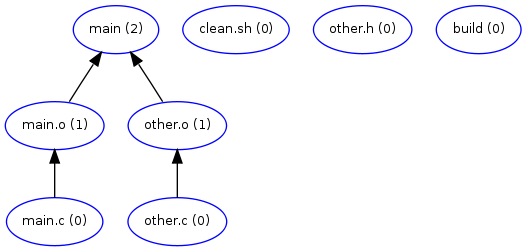 |
The 'create' logic in the build script is effectively equivalent to what would go in a typical Makefile (assuming one has automatic dependency resolution to avoid manually typing in .h dependencies). Here is a comparison between what a Makefile would look like (without auto-dependency pieces) and the relevant part of the build script, which is currently in Perl. Note that although the build script is more verbose, they essentially say the same thing (except for the gcc commands, which show up in the 'modify' section). Also, the build script doesn't have to be in Perl, I just used that for now because it was easy.
| Makefile | build script 'create' portion |
main: main.o other.o gcc -o $@ $^ %.o: %.c gcc -c $< -o $@ |
if($name =~ /\.c$/) {
$output = $name;
$output =~ s/\.c$/.o/;
if(system("create_dep $name $output") != 0) {
exit 1;
}
} elsif($name =~ /\.o$/) {
if(system("create_dep $name main") != 0) {
exit 1;
}
} else {
print " ignore $name\n";
}
|
At this point the Updater has finished the 'create' loop, since no new dependencies have been created by the build script. It then goes into its modify loop, which will actually go through the partial DAG as described last week. During the modify loop, the .c files will actually be compiled and linked. Also, the wrapper program will generate the links in the directory for other.h for the dependencies on the object files. The complete DAG is then present in the tup hierarchy. At this point a new .c file (say, foo.c) could be created in the directory. A link would be created in the create/ directory. When the Updater is run, it will call the build script to generate the foo.c->foo.o and foo.o->main links, and then run through the modify loop to build them.
Deleting nodes provided another challenge. My initial thought would be to count the number of incoming edges to a node. When a node is deleted, it would decrement the count of any dependencies. If the count went to 0, that node would also be deleted. Otherwise, it would be updated as if the file were modified. However, this doesn't quite work. For example, we have other.c which includes other.h. I would expect that if other.h is deleted, then other.c is recompiled into other.o (success or failure doesn't matter - I just expect it would re-trigger the compile). However, if other.c is deleted, I would expect that other.o is also deleted, and then main is relinked (again success or failure doesn't matter on the link). This is difficult because in the Updater we just have two edges to other.o, and don't know which ones should trigger updates and which ones should trigger deletes. Again this is build-specific knowledge, so I ended up moving it to the build script.
Let's say we had added foo.c to the build, then realized the mistake and deleted it. We still have foo.o lying around, and main is still linked with the extra object. The Monitor put the delete event in the delete/ directory. The Updater actually treats delete/ events almost the same as modify/ events, with the exception that sometimes it will delete objects in the tup hierarchy depending on the result of the build script. Here is the current full DAG. The red nodes are the ones that are candidates for deletion. Note that foo.c has already been removed at the command line.
| 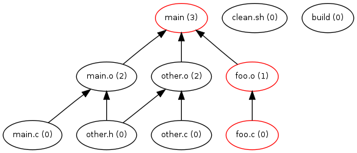 |
When the Updater runs, it will go through the partial DAG and issue delete commands to the build script for each file. The build script ignores the .c file since it is already removed. When it receives a delete request for foo.o, we make a check. If foo.c exists, we try to re-compile. Otherwise, we delete foo.o. Again, this knowledge is specific to this particular build environment, so it is kept in the build script. Currently it just removes the file and exits with a special return code to let the Updater know that it can remove the object from the tup filesystem. The Updater also issues the delete request to the build script for the main executable. The build script also issues a check here. If there are still objects in the directory, it will try to link them. If not, it will delete main. In this particular case, after foo.c is deleted and the Updater runs we have the following:
| 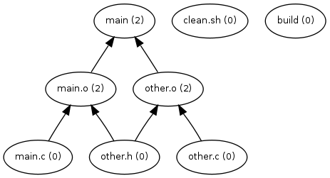 |
So it seems that creating and deleting files can be handled by the Updater. Moving files is handled by doing both a delete on the old file and a create on the new file (this is handled by the Monitor, which picks up such events). Still to come is a lot of testing (for example, deleting one node and modifying another, or creating a node and deleting it before running the Updater).
Since the Updater is largely complete (aside from probably a few corner cases), Professor Lien suggested that I get an initial comparison of the time to build a project using the Updater versus building the same project with make. I am using GNU make v3.81 in these tests. This is different from my comparison in February, which was done largely to determine the overhead of using the Wrapper program. Now that the Updater and build script are functional, I can get a more direct comparison between make (using gcc -MMD for dependencies) and my set of programs.
I am re-using the test program from before, where I generate .c/.h file pairs, and put them in a random directory hierarchy. The files go in directories anywhere from 0 to 7 layers deep. Each C file includes 7 headers (so 0.c includes 0.h, 1.h, 2.h, ... 6.h). I modified the program slightly so that each directory of C files is compiled into a separate executable. The program also generates two copies of the same tree - one with a Makefile, and one with my Perl build script that is used with the Updater. I compared the execution time (using the real value of 'time' in the shell) of the two in the following categories:
In order to make sure both programs were running in a fair environment, I made sure the disk was synced before running. I also attempted to pre-load the cache in both cases by doing a 'cat' on each file before the initial build. After the initial build, I again ran sync to make sure everything was written out before doing other tests. The four categories of testing were done over the following input sizes: 1, 10, 100, 1000, and 10000. For example, at size=100 there are files 0.c - 99.c, and 0.h - 99.h scattered about the hierarchy. 10000 would be about the size of a large project (such as the Linux kernel, or Firefox). The initial build time test was done only once (since it takes a while to do), and the change file/no-op tests were done 10 times each and averaged.
I ran into a few issues with the Updater while trying the 10000 node case. First, the Monitor quickly hit the 8192 directory limit of inotify. I increased this by doing:
echo 65536 > /proc/sys/fs/inotify/max_user_watches
This was done before running any tests (not just the 10000 node case). Another issue I encountered was that I hit the limit of the maximum number of files in a directory. Specifically, the .tup/object/ directory filled up. I worked around this using the same method as git. Git creates 256 sub-directories for its objects (00, 01, 02...ff) and uses the first byte of the hash to determine which directory it goes in. This effectively cuts down the number of objects in a single directory by a factor of 256. With these changes in place, I was able to build the 10000 node case using the Updater.
Here are the results for the initial build times. Note that in this graph (and the next few), both axes are logarithmic.
| 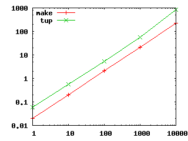 |
In all cases, the Updater requires about 2.5 - 4.0 times more time during the initial build. It seems to scale at the same rate as make, except in the last case where the time spikes a bit. This might be because the large number of files written by the Updater no longer fits in the cache, causing things to be written out early. However, this investment seems worthwhile when considering the update times. First consider a single C file touched:
| 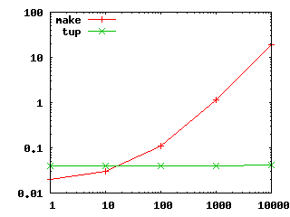 |
Although the Updater performs worse when dealing with small numbers of files, it quickly catches up to make after a sample size of about 20. It also gives nearly constant performance, with a slight increase in the 10000 node case. This is probably due to increased seek time when reading the .tup/object/ directory with a large number of files.
Next we touch a single header file, and update. This builds 7 .c files (which are randomly scattered in various directories), and re-links their binaries. This could be seen as updating the interface to a library, for example. Here are the build results:
| 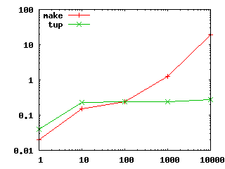 |
This is similar to the C file case. The only extra anomaly here is from 1 node to 10 nodes, since in the 1-node case, touching the header obviously only updates 1 file. In the 10-node case (and all other cases) 7 files are re-compiled. This is useful to see that the Updater scales with respect to the number of files that need to be updated (ie: the size of the partial DAG) rather than the size of the entire project, as make does. Finally we consider the time to "do nothing". Basically this is the time to run make or the updater after a complete build.
| 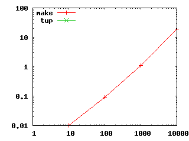 |
The Updater doesn't register any time using the 'time' shell command. All it really does in this case is look in the create/, modify/, and delete/ directories, and then quit because there are no hashes there. In contrast, make reads in all of its dependency files, builds the entire DAG, and then does a stat() on every file in the DAG in order to compare timestamps.
With these results, it is pretty clear that the initial investment for using the Updater is significant. So from a build-once and throw away perspective, it is not worthwhile. However, during a development cycle where a developer focuses only on a small part of a larger program, the time savings from not having to constantly build the entire DAG could be useful.
In order to try to improve the initial build results of the Updater, I looked into removing the use of the Perl script for the build portion. This is because for each file in the directory, I do a fork(), then exec Perl, which may eventually exec gcc or ld. Instead I tried implementing the build portion in C to skip the extra step of going to Perl. This still does a fork() for each file in the create phase, but does not invoke the Perl interpreter for each one. Here is a comparison between using the Perl builder and the C builder, along with the previous make results:
| 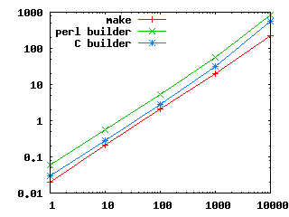 |
The C builder results are slightly improved, yielding a 1.5 factor increase over make in the small cases, and a 2.5 factor in the 10000 node case. Again this increase in the last case is probably because of the sheer volume of files that need to be created. I may investigate using a shared library plugin instead of a separate C program to avoid process creation overhead (except when running gcc), though I don't think this will be enough to overcome the time to create all the files that the Updater uses.